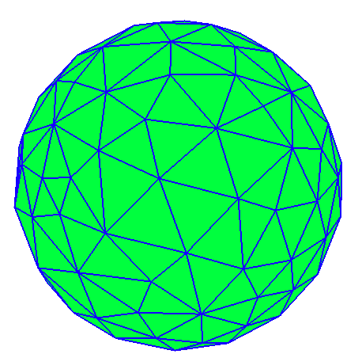
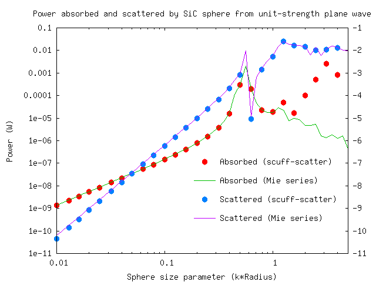
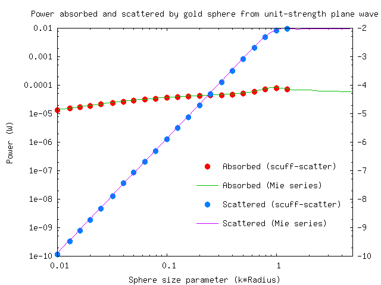
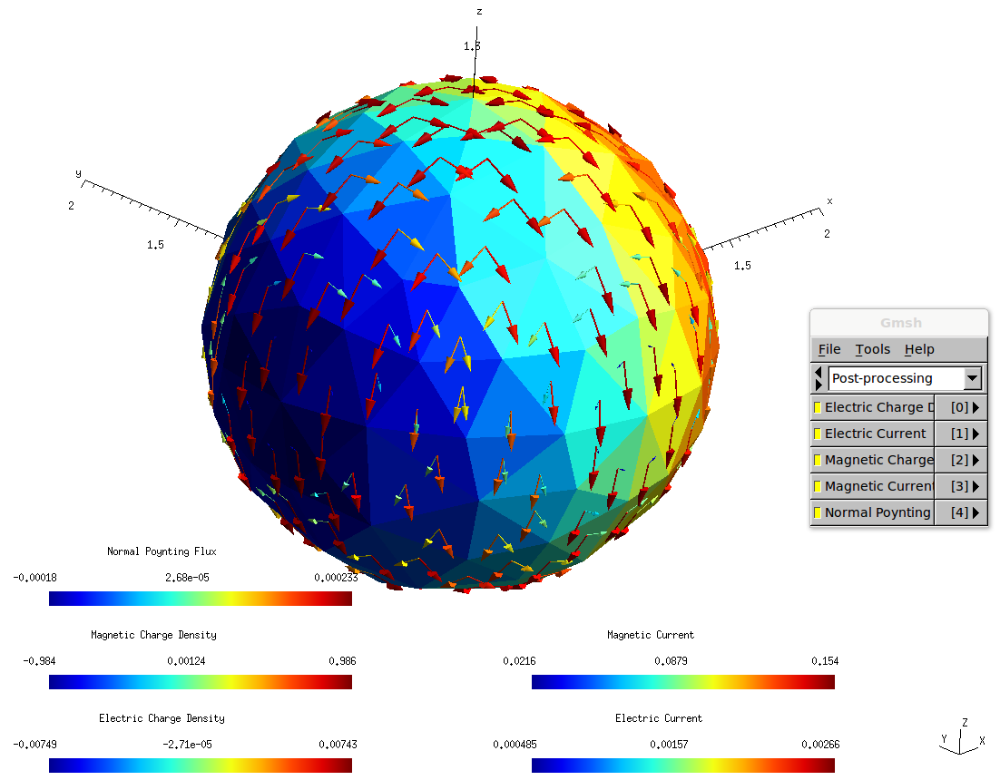

Plane-wave scattering from a dielectric sphere (Mie scattering)
We first demonstrate how to use scuff-scatter to solve the canonical textbook
problem of Mie scattering -- the scattering of a plane wave from a dielectric
sphere. The files for this example are in
the share/scuff-em/examples/SolidSphere subdirectory of the scuff-em
source distribution.
We begin by creating a gmsh geometry file for the
sphere (Sphere.geo). We turn this geometry file into a mesh
file by running the following command:
% gmsh -2 -clscale 1.0 Sphere.geo
This produces a file named Sphere.msh which looks like this:

You can adjust the fineness of the surface mesh by varying the -clscale parameter
(which stands for "characteristic length scale"); finer meshes will be more accurate
but will take longer to simulate.
Next we create a scuff-em geometry file
that will tell scuff-scatter about our geometry, including both the surface mesh
and the material properties (dielectric function) of the sphere. As a first example,
we'll use a dielectric model for silicon carbide that expresses the relative
permittivity as a rational function of ω; in this case we'll call the geometry
file SiCSphere.scuffgeo.
MATERIAL SiliconCarbide
EpsInf = 6.7;
a0 = -3.32377e28;
a1 = +8.93329e11;
b0 = -2.21677e28;
b1 = 8.93329e11;
Eps(w) = EpsInf * (a0 + i*a1*w + w*w) / ( b0 + i*b1*w + w*w);
ENDMATERIAL
OBJECT TheSphere
MESHFILE Sphere.msh
MATERIAL SiliconCarbide
ENDOBJECT
We create a simple file called OmegaValues.dat containing a
list of angular frequencies at which to run the scattering problem:
0.010
0.013
...
10.0
(We pause to note one subtlety here: Angular frequencies specified
using the --Omega or --OmegaFile arguments are interpreted in
units of m = rad/sec.
These are natural
frequency units to use for problems involving micron-sized objects;
in particular, for Mie scattering from a sphere of radius 1 μm, as
we are considering here, the numerical value of Omega is just the
quantity (wavenumber times radius) known as the
"size parameter" in the Mie scattering literature. In contrast,
when specifying functions of angular frequency like Eps(w) in
MATERIAL...ENDMATERIAL sections of geometry files or in any other
scuff-em material description,
the w variable
is always interpreted in units of 1 rad/sec, because these are
the units in which tabulated material properties and functional forms
for model dielectric functions are typically expressed.)
Finally, we'll create a little text file called Args that will contain
a list of command-line options for scuff-scatter; these will include
(1) a specification of the geometry, (2) the frequency list,
(3) the name of an output file for the power, force, and torque
(4) the name of a cache file for geometric data (this file doesn't
exist yet, but will be created by our first run of scuff-scatter),
and (5) a specification of the incident field.
geometry SiCSphere.scuffgeo
OmegaFile OmegaValues.dat
PFTFile SiCSphere.PFT
Cache Sphere.cache
pwDirection 0 0 1
pwPolarization 1 0 0
And now we just pipe this little file into the standard input of scuff-scatter:
% scuff-scatter < Args
This produces the file SiCSphere.PFT, which contains one line per simulated
frequency; each line contains data on the scattered and total power, the force,
and the torque on the particle at that frequency. (Look at the first few lines
of the file for a text description of how to interpret it.)
(On my fairly standard workstation (8 Xeon E5420 cores, 2.5 GHz), this calculation
takes a few minutes to run. You can monitor its progress by following the scuff-scatter.log
file. Note that, during computationally-intensive operations such as the BEM matrix assembly,
the code should be using all available CPU cores on your workstation; if you find that this is
not the case (for example, by monitoring CPU usage using
htop)
you may need to
[reconfigure and recompile with different openmp/pthreads configuration options.][scuffEMInstallation.shtml]
Here's a comparison of the scuff-scatter results with the analytical Mie series, as computed using this Mathematica script. [Like most Mie codes, this script computes the absorption and scattering cross-sections, which we multiply by the incoming beam flux ( for a unit-strength plane wave in vacuum) to get values for the absorbed and scattered power.]

Now let's redo the calculation for a sphere made of gold instead of silicon carbide. In this case we will name our scuff-em geometry file GoldSphere.scuffgeo:
MATERIAL Gold
wp = 1.37e16;
gamma = 5.32e13;
Eps(w) = 1 - wp^2 / (w * (w + i*gamma));
ENDMATERIAL
OBJECT TheSphere
MESHFILE Sphere.msh
MATERIAL Gold
ENDOBJECT
Since most of the command-line arguments to scuff-scatter will be the same as before,
we can reuse the same Args file, with the options that need to be given new values
specified on the command line:
% scuff-scatter --geometry GoldSphere.scuffgeo --PFTFile GoldSphere.PFT < Args
(Note that we don't have to change the name of the cache file specified with the Cache
option; because we are using the same surface mesh as before, and because
cached geometric data in scuff-em are independent of material properties,
we can take advantage of geometric data computed during the earlier run for the silicon carbide sphere.)
Now our data look like this:

In some cases it's useful to look at how the induced surface currents vary over the surface of the object. Let's re-run the SiC example, now at just the single angular frequency of ω=0.1, and ask for a surface current plot.
% scuff-scatter --geometry SiCSphere.scuffgeo --Omega 0.1 --Cache Sphere.cache --pwDirection 0 0 1 --pwPolarization 1 0 0 --PlotSurfaceCurrents
This produces a file named SiCSphere.0.1.pp, which we can open in gmsh like this:
% gmsh SiCSphere.0.1.pp
